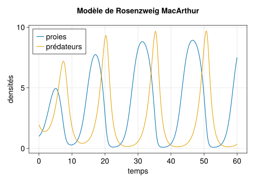

using StaticArrays
using DifferentialEquations
using CairoMakieSimulation optimisée
Modèle de Rosenzweig MacArthur
Nous considérons le modèle de dynamique de populations de Rosenzweig et MacArthur que nous avons déjà vu (Rosenzweig and MacArthur (1963), Turchin (2003), Smith (2008)).
\left\{\begin{array}{l} \dot x = \displaystyle rx\left(1-\frac{x}{K}\right) - c \frac{x}{h+x} y\\[.3cm] \dot y = b\displaystyle \frac{x}{h+x} y - m y \end{array}\right. \tag{1}
L’objectif est de réaliser des simulations performantes, et le tracé du diagramme de bifurcation avec l’estimation par simulation du cycle limite. Ce type de simulations lourdes se prête bien à se genre de benchmark.
Stratégie pour le code
Pour un tel problème de dimension réduite, nous allons utiliser des static arrays (tableaux à adresse fixe dans la mémoire1), ce qui permettra de ne pas crééer une multitude d’objets pour la simulation mais de toujours modifier le même objet en mémoire.
1 depuis le package StaticArrays.jl
Par ailleurs nous allons essayer de nous conformer au maximum aux préconisations :
- ne pas utiliser de variables globales
- définir des fonctions
- mettre les paramètres dans un nombre limité de variables et les passer en arguments des fonctions
Pour ce dernier point, nous allons définir des types (struct) spécifiques.
Nous commençons par importer les packages que nous allons utiliser:
Type spécifique pour les paramètres
Nous définissons un struct pour les paramètres du modèle de Rosenzweig MacArthur.
Type pour les paramètres :
@kwdef struct ParRma
r::Number = 1.0
K::Number = 10.0
c::Number = 1.0
h::Number = 2.0
b::Number = 2.0
m::Number = 1.0
end
Note
La macro @kwdef permet de renseigner des valeurs par défaut des champs du struct.
On peut créer des objets de type ParRma via les constructor ; on accède à un champ particulier via objet.champ :
p_rma = ParRma() # constructor with default values
p_rma2 = ParRma(K = 8.0) # default values except K = 20.0
@show p_rma
@show p_rma.K
@show p_rma2.K; # semi colon do not show output of par_rma2.Kp_rma = ParRma(1.0, 10.0, 1.0, 2.0, 2.0, 1.0)
p_rma.K = 10.0
p_rma2.K = 8.0
Note
La macro @show est assez explicite.
Fonctions
Nous définissons les différentes fonctions impliquées dans le modèle de Rosenzweig MacArthur, la logistique et la réponse fonctionnelle de Holling II.
Pour la logistique :
function logistic(x::Number, p::ParRma)
(; r, K) = p # deconstruct/get r and K from p
return r*x*(1-x/K)
end
Note
- les notations
var::Typepermettent de spécifier le type de l’argument - la notation
(; r, K) = ppermet d’extraire (deconstruct) les champsretKdu paramètrep
Pour la réponse fonctionnelle (sans le paramètre c) :
function holling2(x::Number, p::ParRma)
(; h) = p # deconstruct h from p
return x/(x+h)
endConditions initiales
Pour utiliser les static arrays avec DifferentialEquations.jl il faut que la condition initiale (donc l’état) et les dérivées soient des static arrays (ici un SVector)
const x0 = 1.0
const y0 = 1.95
# SVector are immutables
u0 = SVector(x0, y0)2-element SVector{2, Float64} with indices SOneTo(2):
1.0
1.95Modèle
On définit les équations du modèle en exploitant les fonctions définies plus haut et la structure des paramètres, en renvoyant les dérivées sous forme de SVector :
function mod_rma(u::SVector{2}, p::ParRma, t)
(; c, b, m) = p # get c, b, m from p
x = u[1] # use x, y notations
y = u[2]
dx = logistic(x, p) - c * holling2(x,p) * y
dy = b * holling2(x, p) * y - m * y
return SVector(dx, dy) # return derivatives as SVector
endSimulation simple
On définit les paramètres du temps dans un struct :
@kwdef struct ParTime
tspan::Tuple{Number, Number} = (0.0, 60.0)
tstep::Number = 0.1
end
# construct a time parameter
p_time = ParTime()On définit une fonction qui définit le problème de simulation, l’intègre et retourne la solution, avec pour arguments positionnels la condition initiale, les paramètres et les paramètres de temps, et comme keyword argument le paramètre booléen final.
Lorsque final=false (par défaut), la fonction renvoie toute la solution. Lorsque final=true la fonction renvoie la valeur finale de la simulation, ce sont nous nous servirons plus bas dans l’estimation des extremas du cycle limite.
function sim_rma(u0::SVector{2}, p::ParRma, pt::ParTime; final::Bool = false)
# deconstruct time parameter
(; tspan, tstep) = pt
# define and solve simulation problem
prob_rma = ODEProblem(mod_rma, u0, tspan, p)
if !final # if final is false get whole solution
sol_rma = solve(prob_rma; reltol = 1e-6, saveat = tstep)
else # if final is true get only final solution
sol_rma = solve(
prob_rma;
reltol = 1e-6,
save_everystep = false,
save_start = false,
)
end
return sol_rma
end
sim_rma(u0, p_rma, p_time)Et on définit une fonction qui simule et produit un graphique de la simulation contre le temps, avec pour arguments la condition initiale, les paramètres et les paramètres de temps :
function plot_rma(u0::SVector{2}, p::ParRma, pt::ParTime)
# compute the Simulation
sol_rma = sim_rma(u0, p, pt)
# initialize figure
fig = Figure(; fontsize = 20)
ax = Axis(fig[1,1];
title = "Modèle de Rosenzweig MacArthur\n ",
xlabel = "temps",
ylabel = "densités",
)
# plot solution
lines!(ax, sol_rma.t, sol_rma[1,:]; lw = 2, label = "proies")
lines!(ax, sol_rma.t, sol_rma[2,:]; lw = 2, label = "prédateurs")
axislegend(; position = :lt)
return fig
endFinalement on exécute cette fonction pour tracer la simulation :
@time plot_rma(u0, p_rma, p_time) 0.030520 seconds (274.65 k allocations: 12.755 MiB, 33.39% compilation time)
Note
La macro @time permet de calculer le temps mis pour calculer la commande qui la suit, ici la simulation et la création du graphique.
Diagramme de bifurcations
Cas des modèles de plus grandes dimensions
Pour les modèles de plus grandes dimensions (n>8), l’avantage en performance des static arrays n’est plus si net et la documentation de DifferentialEquations.jl recommande d’utiliser la version en place (is in place, IIP dans le jargon du package) de l’interface problem/solver du package.
Il s’agit ici de définir le modèle non pas comme renvoyant la dérivée en fonction de l’état, des paramètres et du temps, mais comme une fonction d’arguments la dérivée, l’état, les paramètres et le temps qui modifie en place la dérivée (et ne renvoie rien)). Celà permet de muter un même objet dérivée du à chaque fois que le modèle est appelé, plutôt que de créer un nouvel objet dérivée du à chaque appel du modèle (c’est aussi ce qui est fait, différemment, avec les static arrays plus haut).
Typiquement ce type de modèle IIP (en place) s’écrit:
function mod_rma!(du, u, p, t)
return nothing
endLa définition du problème d’intégration et l’appel de solve est similaire aux autres méthodes, à ceci près que la condition initiale et la dérivée doit être mutable, ce qui ne permet pas (ou très difficilement) d’utiliser la méthode en dimension 1. En effet une déclaration u0 = 1.0 ou du = 3.0 n’est pas mutable2.
2 alors que u0 = [1.0, 2.0] ou du =[2.0, 3.0] le sont. Plus sur la mutabilité dans les Julia notes.
References
Rosenzweig, M. L., and R. H. MacArthur. 1963. “Graphical Representation and Stability Conditions of Predator-Prey Interactions.” American Naturalist 97: 209–23.
Smith, H. L. 2008. “The Rosenzweig MacArthur Predator Prey Model.”
Turchin, P. 2003. Complex Population Dynamics. Princeton University Press.